Continent guide · Stamped!
Europe
From Roman temples to glass towers, Europe packs two thousand years of architecture into cities you can explore on foot.
- 46Cities
- 465Landmarks
- 24Countries
- 600 BCOldest · Ancient Agora of Athens
Sagrada Família: Photo: Canaan, CC BY-SA 4.0, Wikimedia Commons; CopenHill: Photo: kallerna, CC BY-SA 4.0, Wikimedia Commons; Duomo di Milano: Photo: Jiuguang Wang, CC BY-SA 3.0, Wikimedia Commons
46 cities in Europe
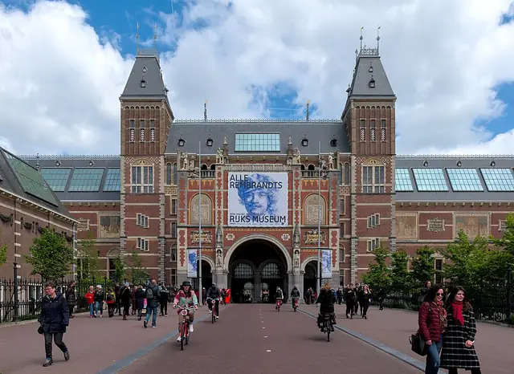
AmsterdamVenice of the NorthNetherlands · 15 landmarksPhoto: Trougnouf (Benoit Brummer), CC BY 4.0, Wikimedia Commons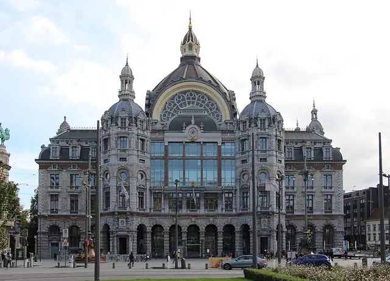
Antwerp't Stad (The City)Belgium · 15 landmarksPhoto: Fred Romero from Paris, France, CC BY 2.0, Wikimedia Commons- AthensThe Cradle of CivilizationGreece · 6 landmarksPhoto: Giles Laurent, CC BY-SA 4.0, Wikimedia Commons
 BarcelonaCity of CountsSpain · 16 landmarksPhoto: Canaan, CC BY-SA 4.0, Wikimedia Commons
BarcelonaCity of CountsSpain · 16 landmarksPhoto: Canaan, CC BY-SA 4.0, Wikimedia Commons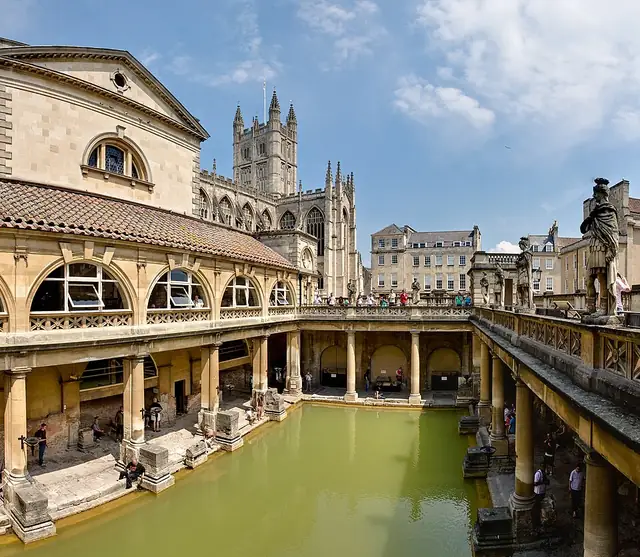
BathThe City of Ships (or The Roman City)United Kingdom · 15 landmarksPhoto: Diliff, CC BY 2.5, Wikimedia Commons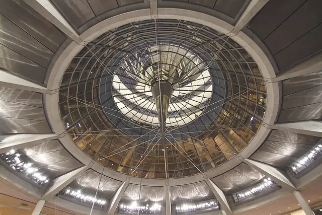
BerlinGrey CityGermany · 15 landmarksPhoto: Fulvio Spada from Torino, Italy, CC BY-SA 2.0, Wikimedia Commons- BilbaoEl BotxoSpain · 15 landmarksPhoto: Naotake Murayama, CC BY 2.0, Wikimedia Commons
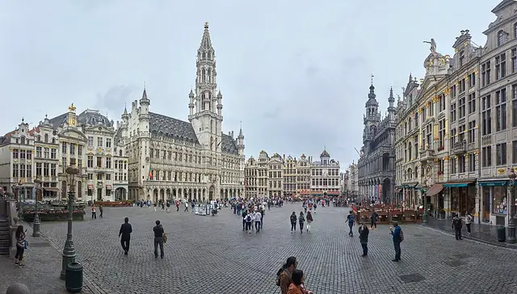
BrusselsCapital of EuropeBelgium · 5 landmarksPhoto: Celuici, CC BY-SA 4.0, Wikimedia Commons- BudapestThe Pearl of the DanubeHungary · 6 landmarksPhoto: Kilyann Le Hen, CC BY 4.0, Wikimedia Commons
- CopenhagenCity of SpiresDenmark · 16 landmarksPhoto: kallerna, CC BY-SA 4.0, Wikimedia Commons
- CorkThe Rebel CityIreland · 14 landmarksPhoto: NateBergin, CC BY 4.0, Wikimedia Commons
- DublinThe Fair CityIreland · 5 landmarksPhoto: Stephen Bergin steve_, CC0, Wikimedia Commons
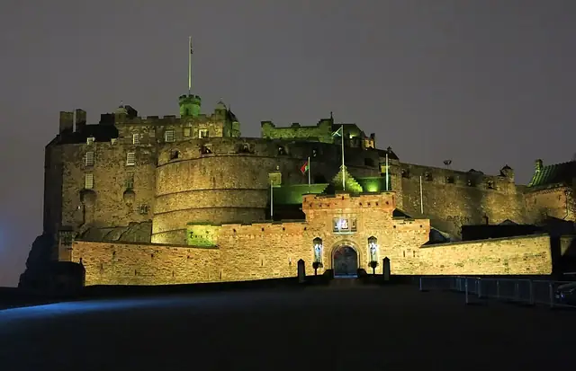
EdinburghAuld ReekieUnited Kingdom · 5 landmarksPhoto: Enric, CC BY-SA 4.0, Wikimedia Commons- FlorenceThe Cradle of the RenaissanceItaly · 5 landmarksPhoto: Gary Campbell-Hall, CC BY 2.0, Wikimedia Commons
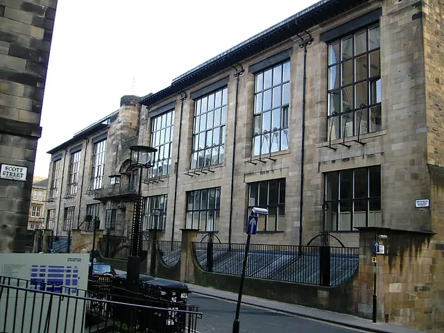
GlasgowThe Dear Green PlaceUnited Kingdom · 15 landmarksPhoto: No machine-readable author provided. Twid assumed (based on copyright claims)., CC BY-SA 3.0, Wikimedia Commons GranadaThe City of the PomegranateSpain · 15 landmarksPhoto: Jebulon, CC0, Wikimedia Commons
GranadaThe City of the PomegranateSpain · 15 landmarksPhoto: Jebulon, CC0, Wikimedia Commons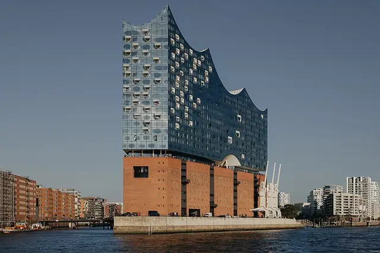
HamburgGateway to the WorldGermany · 15 landmarksPhoto: Evgenii Salganik, CC BY 4.0, Wikimedia Commons- HelsinkiThe Daughter of the BalticFinland · 5 landmarksPhoto: Manster323, CC0, Wikimedia Commons
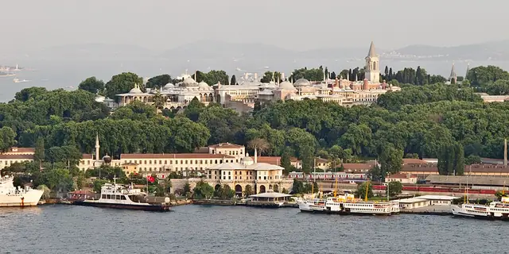
IstanbulCity of Seven HillsTürkiye · 13 landmarksPhoto: Carlos Delgado, CC BY-SA 3.0, Wikimedia Commons KrakówThe Royal Capital CityPoland · 15 landmarksPhoto: Monika Towiańska, CC BY-SA 4.0, Wikimedia Commons
KrakówThe Royal Capital CityPoland · 15 landmarksPhoto: Monika Towiańska, CC BY-SA 4.0, Wikimedia Commons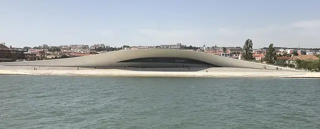
LisbonCity of Seven HillsPortugal · 5 landmarksPhoto: Stefan Bethke, CC BY-SA 4.0, Wikimedia Commons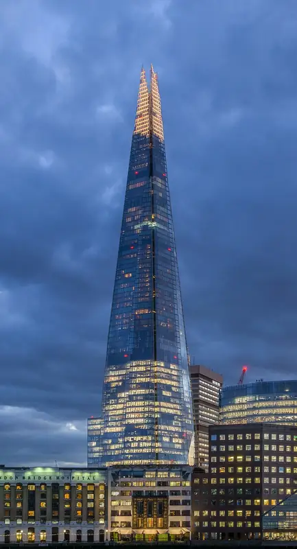
LondonThe Big SmokeUnited Kingdom · 14 landmarksPhoto: Colin, CC BY-SA 4.0, Wikimedia Commons- MadridThe Bear and the Strawberry TreeSpain · 5 landmarksPhoto: Emilio J. Rodríguez Posada, CC BY-SA 2.0, Wikimedia Commons
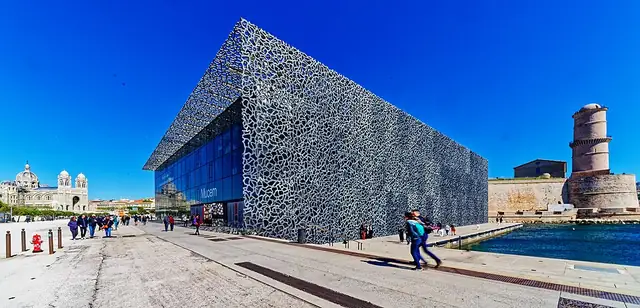
MarseilleThe Phocaean CityFrance · 15 landmarksPhoto: Holger Uwe Schmitt, CC BY-SA 4.0, Wikimedia Commons- MilanFashion CapitalItaly · 16 landmarksPhoto: Jiuguang Wang, CC BY-SA 3.0, Wikimedia Commons
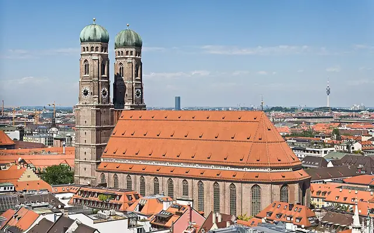
MunichAthens on the IsarGermany · 15 landmarksPhoto: Diliff, CC BY 2.5, Wikimedia Commons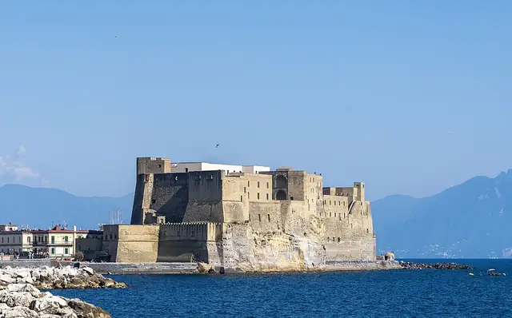
NaplesCity of the SunItaly · 13 landmarksPhoto: PaestumPaestum, CC BY-SA 4.0, Wikimedia Commons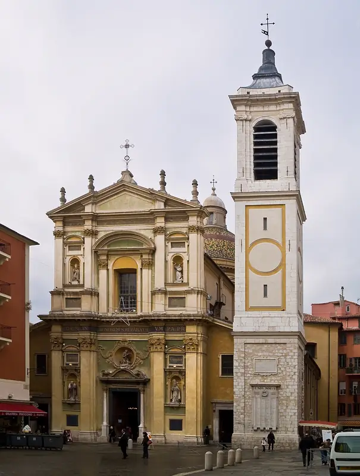
NiceLa Belle du MidiFrance · 5 landmarksPhoto: Myrabella, CC BY-SA 3.0, Wikimedia Commons- OsloThe Tiger CityNorway · 5 landmarksPhoto: Pierre Blaché, CC0, Wikimedia Commons
 ParisCity of LightFrance · 10 landmarksPhoto: Benh LIEU SONG, Public domain, Wikimedia Commons
ParisCity of LightFrance · 10 landmarksPhoto: Benh LIEU SONG, Public domain, Wikimedia Commons PortoThe Undefeated CityPortugal · 15 landmarksPhoto: Guinness323, CC0, Wikimedia Commons
PortoThe Undefeated CityPortugal · 15 landmarksPhoto: Guinness323, CC0, Wikimedia Commons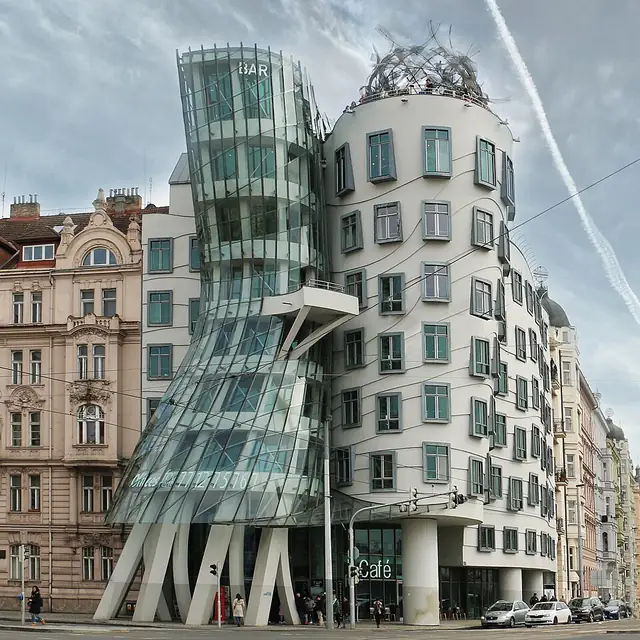
PragueCity of 100 SpiresCzech Republic · 5 landmarksPhoto: Danny Alexander Lettkemann, Architekt, CC BY-SA 4.0, Wikimedia Commons ReykjavikBay of SmokesIceland · 5 landmarksPhoto: Steinninn, CC BY 4.0, Wikimedia Commons
ReykjavikBay of SmokesIceland · 5 landmarksPhoto: Steinninn, CC BY 4.0, Wikimedia Commons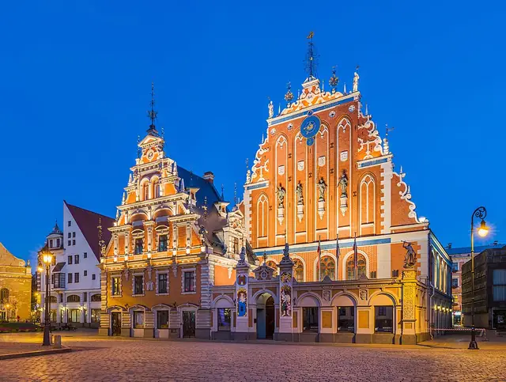
RigaThe Art Nouveau CapitalLatvia · 15 landmarksPhoto: Diliff, CC BY-SA 3.0, Wikimedia Commons RomeEternal CityItaly · 16 landmarksPhoto: FeaturedPics, CC BY-SA 4.0, Wikimedia Commons
RomeEternal CityItaly · 16 landmarksPhoto: FeaturedPics, CC BY-SA 4.0, Wikimedia Commons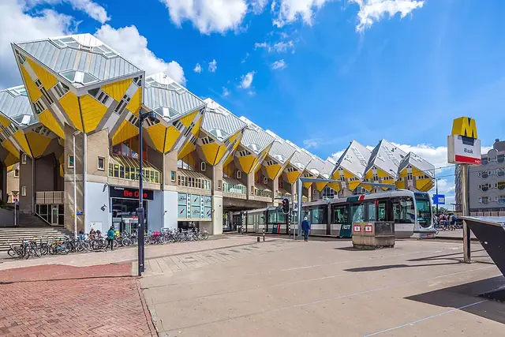
RotterdamGateway to EuropeNetherlands · 15 landmarksPhoto: GraphyArchy, CC BY-SA 4.0, Wikimedia Commons- SalzburgThe Rome of the NorthAustria · 5 landmarksPhoto: C.Stadler/Bwag, CC BY-SA 4.0, Wikimedia Commons
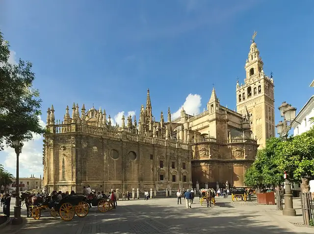
SevilleThe City of GraceSpain · 5 landmarksPhoto: Ingo Mehling, CC BY-SA 4.0, Wikimedia Commons- St. PetersburgThe Venice of the NorthRussia · 5 landmarksPhoto: Godot13, CC BY-SA 4.0, Wikimedia Commons
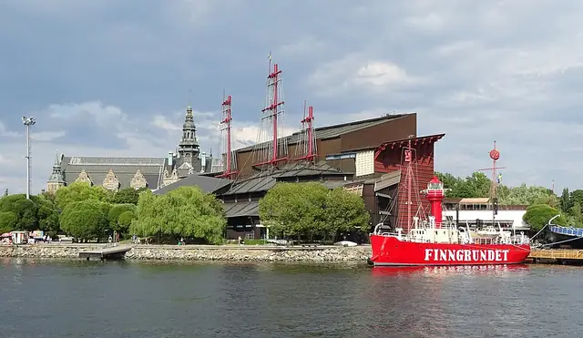
StockholmBeauty on WaterSweden · 5 landmarksPhoto: Ad Meskens, CC BY-SA 4.0, Wikimedia Commons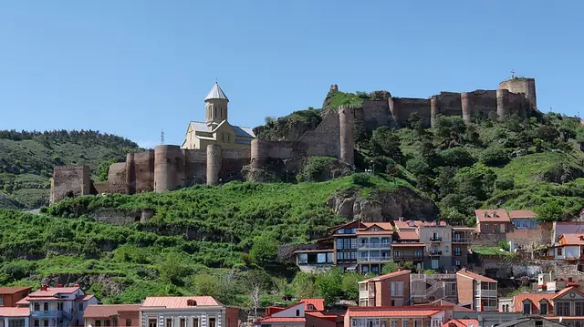
TbilisiThe City of LoveGeorgia · 5 landmarksPhoto: Alexxx1979, CC BY-SA 4.0, Wikimedia Commons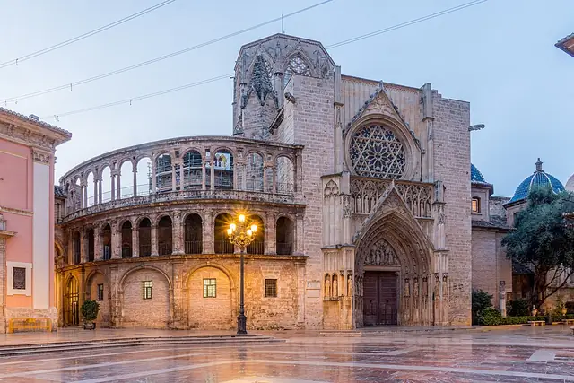
ValenciaCity of JoySpain · 15 landmarksPhoto: Fernando Pascullo, CC BY-SA 4.0, Wikimedia Commons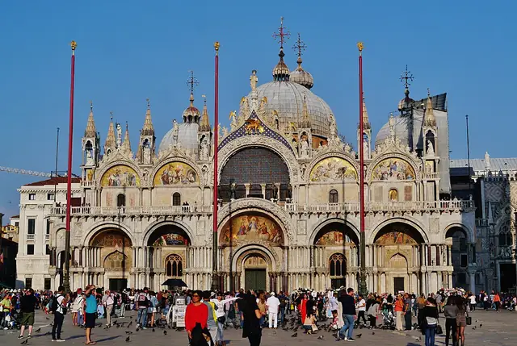
VeniceLa SerenissimaItaly · 5 landmarksPhoto: Zairon, Public domain, Wikimedia Commons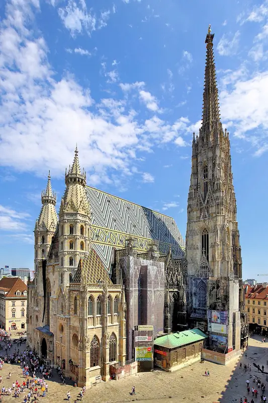
ViennaCity of MusicAustria · 5 landmarksPhoto: C.Stadler/Bwag, CC BY-SA 4.0, Wikimedia Commons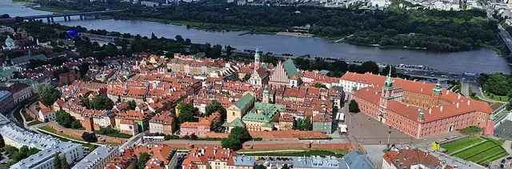
WarsawThe Phoenix CityPoland · 5 landmarksPhoto: Kapitel, CC BY-SA 4.0, Wikimedia Commons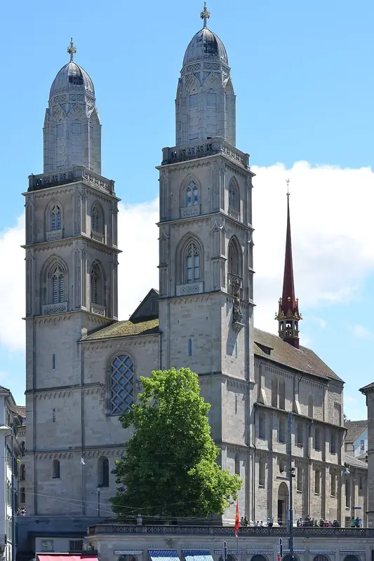
ZurichLittle Big CitySwitzerland · 5 landmarksPhoto: Roland zh, CC BY-SA 3.0, Wikimedia Commons
Other continents
Fly through Europe in 3D.
All 46 cities, 465 landmarks and a passport stamp for every one you visit. Free on iPhone, iPad, Mac and Apple Vision Pro.
Download on theApp StoreEnjoying the guides? Leave a tip to help keep new cities coming.